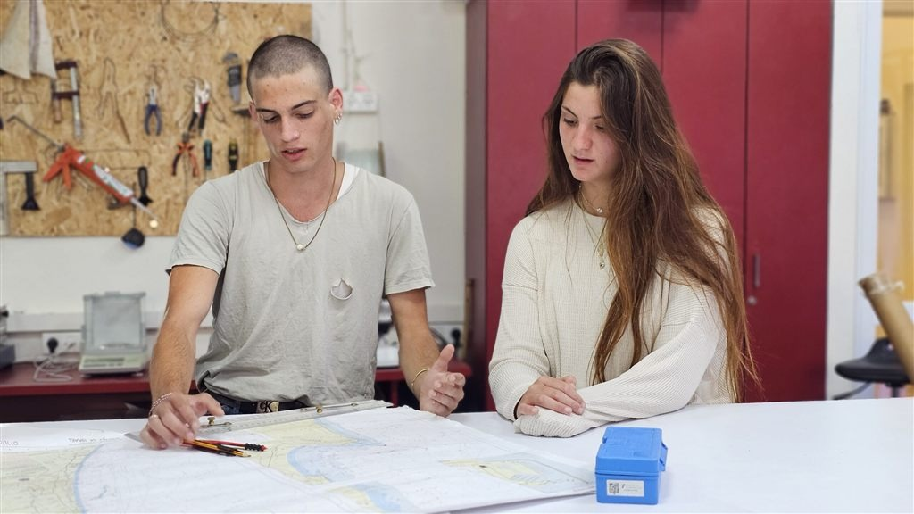

המרחב הפדגוגי
כל הידע המקצועי של המינהל, מסודר לפי מה שעושים בפועל — מהשיעור הראשון ועד ועדת התכנון.

מהשטח · החינוך היוצרלוח מבחנים
3 עמודיםמועדי ההיבחנות של תשפ״ז ושני נתיבי התעודה — בגרות וגמר.
לוח מבחנים · בגרויות וגמר חדש
כל מועדי ההיבחנות של תשפ״ז — חורף, קיץ ומועד ב׳, עם סימון שבעת תחומי הדעת.
נתיב הבגרות
שאלונים ומחוונים, מיקודי חומר, אתרי המפמ״ר וקורסי קמפוס IL — וכל חלופות ההערכה למתקשים, במקום אחד.
נתיב הגמר · תעודת גמר
התעודה המקצועית של משרד העבודה — תוכניות הלימודים של החינוך היוצר, מטלות הגמר, מבחנים לדוגמה ומסעות הלמידה.
הוראה ולמידה
5 עמודיםהחומר שנכנס איתו לכיתה: השאלונים, הכלים הדיגיטליים והתוכניות.
תחומי דעת · שבעת מקצועות הליבה
כל מקצוע בשני נתיבי הדרך לתעודה — גמר ובגרות: תוכניות הלימודים, מחולל השיעורים ומאגר התרגולים.
מאגר שאלוני הבגרות
שאלוני הבגרות והגמר לפי מקצוע ומועד, מוכנים להורדה ולתרגול.
כלים דיגיטליים ומשחקים חדש
מערכי שיעור מוכנים, מחוללי משחקים וכלי AI — נבחרו ונבדקו לשבעת תחומי הדעת.
למידה בחירום
רצף הכשרה בשגרה ובחירום — לפי קהלים, כולל מדור רגשי.
שילוב AI בחינוך
כלים מאושרים, פרקטיקות מהשטח ומדיניות מוסדית.
תוכניות לימודים בקרוב
התוכניות הרשמיות (מסלולי 55/56), תבנית שנתית ותרשים זרימה.
ניהול והערכה
2 עמודיםהכלים של מי שמוביל את העשייה הפדגוגית — רכז, מנהל ומפקח.
כלים ניהוליים פדגוגיים
המצפן הפדגוגי ואיגרות הפדגוגיה המיטיבה — תלמידים וצוות חינוכי.
מסלולים מותאמים וחלופות הערכה
כל מסלולי ההיבחנות המותאמים במקום אחד — יהלו״ם, שחל״ב, תן למילים, שאלון 241, רשתות ביטחון והתאמות ללקויות למידה.
תוכניות עבודה · מורים מקצועיים בקרוב
תבניות ודוגמאות לתוכנית העבודה השנתית של המורה המקצועי. תוכניות העבודה לבעלי תפקידים — במרחב המנהלים.